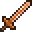
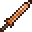

В игре есть множество типов оружия — от медного кинжала до S.D.M.G.. В этой статье приведено всё оружие, которое есть в текущих версиях Terraria.
Также, помимо нижеперечисленных предметов, в качестве оружия могут быть использованы инструменты для добычи, т.к. они тоже наносят ближний урон.
Холодное оружие
Данный тип оружия довольно лёгок и универсален в применении. Тип урона — ближний, а значит броня класса "воин" будет повышать боевую эффективность с данным типом оружия.
Мечи (Swords) — Наносят рубящие удары в сторону взгляда игрока.
| Название | Урон | Скорость | Отбрасывание | Хардмод | Автоатака | ID | |
|---|---|---|---|---|---|---|---|
 |
Деревянный меч | 7 | 25 (Быстрая) | 4 (Слабое) | Нет | Нет | 24 |
|  | Медный меч | 8 | 23 (Быстрая) | 5 (Среднее) | Нет | Нет | -14 |
Кинжалы (Shortsword) — Тычковое оружие, наносит урон перед собой.
| Название | Урон | Скорость | Отбрасывание | Хардмод | Автоатака | ID | |
|---|---|---|---|---|---|---|---|
|  | Медный кинжал | 5 | 13 (Очень быстрая) | 4 (Слабое) | Нет | Нет | 3507 |
Уникальные мечи (Unique Swords) — это нестандартные особые мечи, которые являются особым лутом или имеют некоторые отличительные способности (стрельба снарядами, освещение).
| Название | Урон | Скорость | Отбрасывание | Хардмод | Автоатака | ID |
|---|